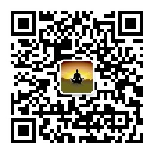

欢迎来到【悠闲小路】的主页
你好，我是悠闲小路，从事电脑运维行业10多年，2022年想要转变为自由职业。
给别人打工和给自己打工是完全不同的领域，我渴望改变，却对未来充满迷茫和恐惧，加上拖延的毛病，迟迟无法踏出这一步。
2022年初看到一本书《福格行为模型》，实践了书中的方法，对自己帮助比较大。觉得很不错，也跟其他的小伙伴推荐了，但是发觉现在很多人是不喜欢看书的， 更愿意看视频。即使看书，大部分人也不会看完。即便看完，很多人也不会真正实践书上的内容。真正读透一本书，做到知行合一是非常困难的。
所以我决定从书中提炼出简洁的观点并结合实践，做成免费的视频课程 【从0开始改变生活】 ，方便大家学习实践。
加微信互相交流：youxianxiaolu8

微信公众号：悠闲小路学习区
